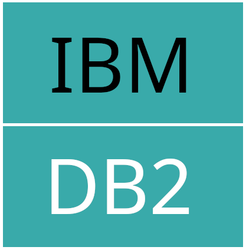

Primero, el contexto
Un agente necesita contexto, herramientas y verificación para analizar datos.
Tres preguntas, un minuto. Sin nombre ni empresa. Las respuestas de hoy son la materia prima que vamos a tipar en la Parte 3.
No pedimos nombre ni empresa. El texto libre no existe hoy como columna — por eso lo vamos a convertir en una, en vivo.
dogs are better than cats
pandas and ipynb should disappear from this world
OLTP → ETL → OLAP → Analytics / ML
Un agente necesita contexto, herramientas y verificación para analizar datos.
Una métrica cambia cuando cambian la pregunta, el corte o el denominador.
Respuestas ≠ personas: una persona puede responder varias preguntas; un navegador no prueba identidad.
Funcionó con unas
La pregunta es hipotética. Para medir el salto, usaremos 11,198,026 viajes reales de taxi en Nueva York.
Guarda y actualiza transacciones pequeñas con rapidez: pedidos, pagos, cuentas y perfiles.
 PostgreSQL
PostgreSQL MySQL
MySQL SQLite
SQLite MariaDB
MariaDB Microsoft SQL Server
Microsoft SQL Server
IBM Db2Ejemplos conocidos; cada producto ofrece ediciones y condiciones distintas.
“Refrigerador” es nuestra analogía para este despliegue tradicional: SQL, cómputo y almacenamiento viven juntos.
Programa y librería
Python · JDBC
Comandos directos
wrangler · sqlite3
Consola, editor o notebook
la UI también usa un cliente
Una interfaz estructurada
por ejemplo, D1 MCP
Un agente puede usar cualquiera si tiene acceso y contexto; algunos caminos le resultan más naturales.
Lee demos/clase-02/pipeline/poll_aggregate.sql y ejecútala con d1_database_query. Devuelve pregunta, opción y votos, además del total. Si aún no hay votos, informa cero. No consultes identidades ni texto libre.
| pickup | PU | DO | fare | tip | pay |
|---|---|---|---|---|---|
| 00:18:38 | 229 | 237 | 10.00 | 3.00 | 1 |
| 00:32:40 | 236 | 237 | 5.10 | 2.02 | 1 |
| 00:44:04 | 141 | 141 | 5.10 | 2.00 | 1 |
PU / DO = ubicación de recogida / destino · muestra, no resultados del análisis
¿Cuál es el porcentaje promedio de propina sobre la tarifa, por hora de recogida y forma de pago?
uv run demos/clase-02/live.py scale --engine sqlite
uv run demos/clase-02/live.py scale --engine duckdbEntonces, ¿qué cambió?
Una transacción suele leer o cambiar una fila completa.
común en OLTPUn agregado puede leer sólo las columnas que necesita.
común en OLAP Databricks
Databricks Microsoft Fabric
Microsoft Fabric* Detalles según plataforma. DuckDB, nuestro motor de la demo, es embebido: no un warehouse cloud elástico.
ETL: extraer, transformar y cargar. También existe ELT: cargar y transformar dentro del destino.
Gran parte de la ingeniería de datos está aquí: decidir cómo mover, modelar y cuidar los datos en el tiempo.
Batch, microbatch o streaming.
Idempotencia, límites y reintentos acotados.
Esquemas, definiciones, validaciones y conteos conciliados.
Errores, alertas, escalamiento e intervención humana.
Un agente puede ayudar a proponer o revisar el DAG. La responsabilidad sigue siendo de ingeniería.
Lee demos/clase-02/data-contract.md y el pipeline existente. Inspecciona con Wrangler el grupo D1 8P56ZUVE9Q en modo de solo lectura; descubre encuestas y opciones desde los metadatos. Explica el plan y, si coincide con el contrato, ejecuta `uv run demos/clase-02/live.py etl --dataset class2`. Comprueba los conteos y que repetir la carga no duplique filas. Informa fallos sin fingir resultados. No escribas en D1 ni muestres hashes o respuestas individuales. Detente antes de ai_classify o Jev.
uv run demos/clase-02/live.py etl --dataset class2La demo enseña el flujo y sus comprobaciones; el pipeline termina antes de cualquier llamada pagada a un modelo.
Definir medidas ligadas a fenómenos reales. Contarlas, visualizarlas y decidir qué hacer.
dashboard · reporte · acciónAprender patrones de ejemplos etiquetados para aproximar una clasificación.
modelo · evaluación · operaciónTexto a SQL para explorar; LLM o Jev para ayudar a interpretar una columna de texto.
preguntar · juzgar · revisarLa Clase 1 analizó la encuesta en vivo: eso fue analítica de negocio. [Notas: Astronomer · What Jev will do to data engineering]
uv run demos/clase-02/live.py etl --dataset class1
Escenario runnable
Listo. Casi. Medir un fenómeno y tener organización para actuar sobre él completan el trabajo.
Un buen espacio incluye preguntas, definiciones y tablas que se pueden consultar.
SELECT clasificar_persona_ml(puesto_texto)
FROM workspace.ai4data.dim_participante;
Abrir notebook 02 ↗
El accuracy de un corpus pequeño es ilustrativo, no una promesa de calidad en producción.
ai4data-class2 / typesafe-api-key; local: TYPESAFE_API_KEY.
OLTP sirve a la aplicación; una carga analítica grande puede competir por sus recursos.
OLAP cambia almacenamiento, ejecución y forma de escalar.
ETL / ELT mueve y modela con definiciones, idempotencia y verificaciones.
Analytics, ML e IA convierten la copia en medidas, predicciones y juicios revisables.
El agente ayuda a consultar y construir. Los criterios siguen importando.
No es la respuesta universal; es una arquitectura bien estudiada y una buena base para muchos problemas.